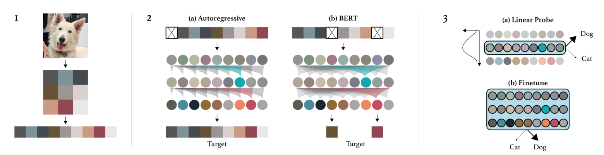

Transformer架构的可能应用#
在之前的部分中，我们通过预测下一个标记（如GPT）的应用展示了Transformer的能力。我们还讨论了编码器、解码器和完整架构在NLP任务中的区别。
Transformer架构的优势在于其通用性。它可以应用于各种不同的问题，而卷积层则因其偏差（使其在图像处理中快速高效）而受到限制。
在本课程中，我们将快速介绍Transformer在不同领域的几种经典架构，主要集中在NLP和视觉处理方面。
BERT#
论文《BERT: Pre-training of Deep Bidirectional Transformers for Language Understanding》提出了一种无监督训练编码器类语言模型的方法。
关于NLP的无监督训练：语言模型（LLM）如GPT和BERT的一个优势在于，可以在不需要标注的情况下，在大量数据上训练它们。对于GPT，我们取一段文本，隐藏其结尾，并要求模型生成它。损失通过比较模型的生成结果与原始文本来计算（如我们为生成莫里哀作品所做的那样）。对于BERT，其方法略有不同。
模型训练#
BERT是一个编码器模型，即它同时考虑了单词左右两侧的上下文（在当前单词之前和之后）。我们无法像GPT那样仅仅预测后续单词来训练它。
掩码语言模型（MLM）：BERT是一个掩码语言模型（MLM）。在训练过程中，我们随机掩盖句子中的某些单词，并要求模型利用掩盖单词周围的上下文来预测它们。

图片来源：博客文章
下一句预测（NSP）：BERT还被预训练用于确定句子B是否在文本中紧随句子A，这有助于模型理解句子之间的关系。
注意：要了解更多关于BERT的信息并学习如何微调它，您可以参考第10课：BERT微调。
BERT的用途#
BERT及其他编码器语言模型（如RoBERTa、ALBERT等）被用作更精确任务的基础。然后，我们可以对它们进行微调以适应其他任务，特别是之前笔记本中提到的任务（如情感分析、文本分类等）。
注意：我们已经了解了如何无监督训练编码器和解码器模型以用于NLP任务（如BERT和GPT）。同样，也可以无监督训练一个完整的模型（编码器、解码器和交叉注意力）。T5模型就是一个例子。我们不会在此笔记本中描述其工作原理，但您可以通过博客文章了解更多信息。
图像处理中的Transformer#
在NLP领域的Transformer爆发几年后，其在计算机视觉领域的应用也引起了革命性的变化。论文《An Image is Worth 16x16 Words: Transformers for Image Recognition at Scale》提出了一种适用于图像处理的编码器类Transformer应用。
ViT：视觉Transformer#
该论文提出了基于将图像分割为补丁（patches）的视觉Transformer（ViT），这些补丁然后被作为标记（tokens）输入到Transformer中。

如图右侧所示，该架构对应于编码器类架构（与《Attention Is All You Need》的唯一区别在于在层之前应用规范而不是之后）。
在视觉Transformer（ViT）模型中，每张图像被分割为固定大小的补丁（例如16x16像素）。每个补丁被扁平化为向量，然后通过线性投影层投影到嵌入空间，类似于BERT或GPT等文本处理模型中的嵌入层。这种向量表示捕捉了图像的空间和结构信息，就像NLP模型中的嵌入捕捉了单词的含义和关系。论文标题“An Image is Worth 16x16 Words”反映了这一类比：每个图像补丁被视为嵌入空间中的“词”，以便使用Transformer架构进行学习。
注意：
原始论文中的视觉Transformer是通过监督学习在对象分类任务上进行训练的。该论文的结果令人印象深刻，展示了其超越卷积模型的能力。
对于视觉任务（监督学习）的ViT架构的一个显著改进是Swin Transformer。该Transformer具有分层架构（可能让人联想到CNN），能够更有效地捕捉空间关系。
视觉中的无监督学习#
在NLP领域，基础模型（无监督训练）取得了显著进展。创建一个用于图像的基础模型也是一个非常吸引人的任务。这将允许我们轻松地在特定任务上微调模型并获得良好的结果。为了实现这一目标，仅基于图像提出了多种方法。我们将在本部分的后续内容中介绍其中的两种方法。
BEIT：BEIT: BERT预训练图像Transformer提出在图像上使用与BERT相同的训练模式。这意味着在训练过程中掩盖图像中的某些补丁，并尝试预测它们。然而，与单词不同，图像的可能性几乎是无限的（如果要预测一个\(3 \times 8 \times 8\)大小的RGB图像，有\((256 \times 256 \times 256)^{8 \times 8} = (16777216)^{64}\)的可能性，这比宇宙中的原子数量还多）。因此，我们无法直接预测像素。
为了解决这个问题，我们使用VQ-VAE，它可以对图像表示进行离散化。这种离散版本对应于来自固定大小字典的值，因此可以预测这种离散表示。

图像GPT：论文《Generative Pretraining from Pixels》提出了一个针对像素的GPT等效模型。这是一个自回归模型，它逐个像素生成图像，就像NLP自回归模型处理标记（tokens）一样。这允许进行无监督训练，但仍然存在一些缺点：
生成需要大量时间，因为每次只生成一个像素。因此，我们需要先进行降维处理。
从左到右生成图像没有意义。为什么是从左到右而不是从右到左？或者从中间开始？

还有其他方法可以无监督训练视觉Transformer（或其他视觉模型），例如掩码自编码器或结合文本和图像的模型。
结合文本和图像的Transformer#
结合文本和图像的Transformer模型在创建基础模型方面证明了其重要性。这些模型通常是“captionneurs”，即训练它们生成图像的描述。
CLIP：连接图像和文本#
在本部分，我们将介绍论文《Learning Transferable Visual Models From Natural Language Supervision》中提出的模型CLIP的工作原理。我们还将介绍此类模型的兴趣和在各种任务中的能力。
CLIP架构：CLIP的训练基于对比方法。这种训练方法包括向模型呈现两个示例：一个正示例与给定的标签相对应，一个负示例与标签不相对应。目标是促使模型正确地将正示例与标签关联起来，同时将负示例与标签分离。因此，这种方法可以在两者之间定义一个明确的边界，最大化它们之间的分离，区分相关（正）和不相关（负）内容。
实际上，CLIP同时使用基于Transformer架构的文本编码器和图像编码器。模型编码文本描述和图像，然后在训练过程中正确地将它们关联起来。主要目标是最大化相应描述和图像之间的相关性，同时最小化不匹配对之间的相关性。这使得模型能够在共同的嵌入空间中有效地表示文本和图像之间的关系，从而促进从图像生成文本和反之的理解和生成。
在测试阶段，我们可以要求模型为我们的图像生成一个适当的描述。

模型使用：除了简单的captionneur，CLIP还可以进行零样本分类，即可以在没有特定训练模型进行该任务的情况下对图像进行分类。在CLIP的情况下，这允许为提供的每个描述分配一个分数。我们给出两个描述“A photo of a cat”和“A photo of a dog”，它返回当前图像与每个描述关联的概率分数。
其他用途：这种训练方法还使得可以创建零样本检测模型如OWL-ViT，风格迁移模型或图像生成模型。
带描述的图像数据集：我们还可以质疑图像描述是否等同于标签，因此需要繁琐的标注来训练此类模型（这些模型需要数十亿图像才能高效运行）。实际上，可以通过HTML代码中的图像“alt”在互联网上轻松收集带描述的图像。这是人们在HTML代码中为图像添加的图像描述。
当然，这些数据可能并不总是可靠的，但在此类模型中，数量比质量更重要。
此外，现在已经有包含数十亿图像/描述对的开源数据库。最著名的是LAION-5B。